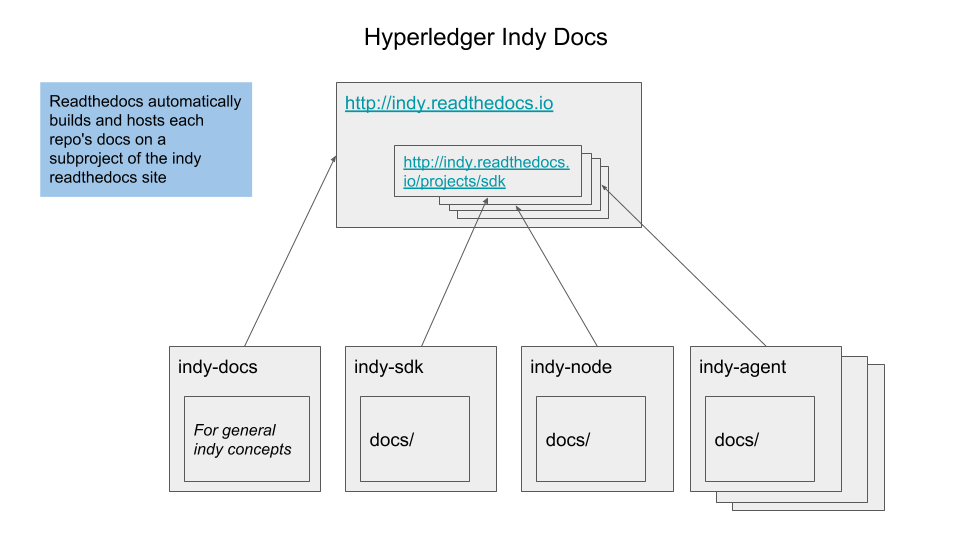

- Name: indy-docs-framework
- Author: Michael Boyd michael.boyd@sovrin.org
- Start Date: 11/27/18
- PR: (leave this empty)
- Jira Issue: (leave this empty)
Summary¶
This HIPE proposes that each relevant Indy repository maintain a docs/ folder that can be built to display the documentation library in html format using Sphinx. We will use http://readthedocs.org to automatically build and host all these html libraries together under http://indy.readthedocs.io.
We’ve created a proof of concept with five of the Indy repo’s at the above link.
Motivation¶
- Make better documentation that helps users and contributors to more easily understand, use, and contribute to our code.
- Help maintainers eliminate duplicated or deprecated content and give everyone a way to efficiently index and search all our documentation across all our repositories.
- Provide new users a clear path on how to implement the Indy code within their projects, driving adoption of the project and lowering developer burnout.
Why did we choose this method?¶
- Maintain a single source of truth for each document while keeping documentation near to the location of the code they describe.
- This framework can be easily owned and maintained by contributors for each repository.
- It is flexible to future changes in our software architecture and repository structure.
Tutorial¶
Relevant Repositories¶
Here is a list of all the repositories in which we have documentation:
- indy-sdk: https://github.com/hyperledger/indy-sdk
- indy-node: https://github.com/hyperledger/indy-node
- indy-agent: https://github.com/hyperledger/indy-agent
- indy-plenum: https://github.com/hyperledger/indy-plenum
- indy-hipe: https://github.com/hyperledger/indy-hipe
- indy-crypto (soon to be ursa): https://github.com/hyperledger/indy-crypto
In addition, we have created the indy-docs repository to hold general prose that explains indy concepts and provides users a jumping off point into the respective repos.
- indy-docs: https://github.com/michaeldboyd/indy-docs/ (Provided this HIPE is accepted, we should create an official HL/indy-docs repo)
Implementation Details¶
Each Indy project has a docs/ folder at the project root. This folder contains all of the documentation that is relevant to the repository. The docs/source folder contains all of the documentation that will be built into the html library. Here is the indy-sdk docs/ folder as an example: https://github.com/michaeldboyd/indy-sdk/blob/sphinx-docs-test/docs
We use two tools to build documentation:
- Sphinx: We’ve found this to be the most flexible tool to build html documentation from source and have cross-project search functionality.
- Readthedocs: A free documentation hosting service that works really well with Sphinx and is basically plug-n-play for maintainers.
Each docs/source/ folder has 3 main files: conf.py, index.rst, and Makefile.
conf.pycontains all of the Sphinx configuration code. More details on how to edit theconf.pycan be found on the Sphinx website.Makefileis to build the docs locally. Local build instructions are below.index.rstdefines the menu structure of the library and is also the home page for the repository.
Sphinx uses reStructuredText (.rst) and its powerful directives to build the documentation. While sphinx will also build .md markdown files, we’ll need to use .rst files and the .. toctree:: (table of contents tree) directive whenever we want to show nested page structure in the sidebar.
Docs/ Organization¶
The main entry point for a docs library is the root level index.rst file within the source/ folder. In this file, the toctree directive defines the main menu for the library.
This is the toctree for the indy-sdk index.rst:
.. toctree::
:maxdepth: 1
:hidden:
getting-started/index.rst
concepts/index.rst
how-tos/README.md
build-guides/index.rst
migration-guides/index.rst
Additional links either be added to the root level or each of the respective folder’s index.rst files to be included on the menu.
In each of the folders, include additional .md or .rst by adding them to the toctree directive.
It will make more sense to see it in action: Indy SDK Docs
Depending on the needs of the repository, the docs/ folder may contain as many or as few documents as the maintainers feel are necessary to:
- Provide a clear conceptual overview of the repository for readers to clearly understand what it does.
- Enable technical users to quickly begin implementing the code
- Resolve common questions or current issues that create blockers to using the repository
- Onboard potential contributors into the open-source community surrounding the repository.
We recommend keeping documentation files organized by folder based on their topic, but we leave it up to maintainers to decide how best to structure their docs.
Reference¶
How to Add Documentation¶
For new features and pull requests, maintainers should make sure that the contributor has added an explanation for their changes in the docs folder before merging the PR.
Contributors should write an addition to a current file or add a new file to the docs/source/ folder that explains what their feature is and how it works. If needed, they may also add a link to more technical README’s located nearer to the code.
Whenever additions are made to the docs, make sure to update the index.rst in whichever folder the file has been added, and build the docs locally to confirm they work (TODO: add the sphinx-build command to our CI/CD flow).
For example, if I wanted to add another file to the indy-sdk docs/ folder named glossary.md, I would create the file, and then add a reference to it in the index.rst:
.. toctree::
:maxdepth: 1
:hidden:
getting-started/index.rst
...
other files
...
glossary.md .. <-- this is your new file!
To add a new file to a subfolder, simply update the subfolder’s index.rst with the relative link to your file.
If you’d like to link to a file outside of the docs/ folder, you’ll need to provide an external github link (this is by design, to keep our docs organized into a single folder)
How to Host on Readthedocs¶
A maintainer who has access to the Hyperledger repositories will need to create an account with Readthedocs and set up the free hosting through their web UI. I’ve created the example http://indy.readthedocs.io from my forks of the repositories. View the diagram below to see how it is structured. Git webhooks are automatically added to keep the docs up to date.

We simply need to import all of our repositories into readthedocs.org using their web UI, and then define the subproject structure.
Building the docs on your machine¶
Here are the quick steps to achieve this on a local machine without depending on ReadTheDocs. Note: Instructions may differ depending on your OS.
pip install Sphinx
pip install sphinx_rtd_theme
pip install recommonmark==0.4.0
cd docs/source # Be in this directory. Makefile sits there.
make html
This will generate all the html files in docs/_build/html which you can then browse locally in your browser. Every time you make a change to the documentation you will need to rerun make html.
Maintaining Versions¶
Readthedocs includes the ability to add additional versions for each of the projects. To build documentation for a different version of any Indy repo, we just need to specify which versions to display on indy.readthedocs.io.
Implementation of a Multiproject Sidebar¶
There have been a couple design decisions that have given me pause. One of those has been the method of building our multi-repository sidebar on http://indy.readthedocs.io.
While readthedocs supports subprojects, it does not automatically make a shared menu for the projects. I created a separate config file named remote_conf.py to define a global sidebar that includes links to all the repositories.
To make sure that each project includes the global sidebar on readthedocs, each repo’s conf.py file has a couple lines to import the remote_conf.py file from github and build the sidebar during the sphinx build.
# conf.py
...
# ------------ Remote Documentation Builder Config -----------
# Note: this is a slightly hacky way of maintaining a consistent sidebar amongst all the repositories.
# Do you have a better way to do it?
on_rtd = os.environ.get('READTHEDOCS', None) == 'True'
if(on_rtd):
rtd_version = os.environ.get('READTHEDOCS_VERSION', 'latest')
if rtd_version not in ['stable', 'latest']:
rtd_version = 'latest'
try:
os.system("git clone https://github.com/michaeldboyd/indy-docs-conf.git remote_conf")
os.system("mv remote_conf/remote_conf.py .")
import remote_conf
remote_conf.generate_sidebar(globals(), nickname)
intersphinx_mapping = remote_conf.get_intersphinx_mapping(rtd_version)
master_doc = "toc"
except:
e = sys.exc_info()[0]
print e
finally:
os.system("rm -rf remote_conf/ __pycache__/ remote_conf.py")
Note that this will only execute when on readthedocs servers and not on user’s machines.
I would still like to find a more elegant way to build this sidebar if possible. It feels weird to be running git clone through python. Any ideas?
Drawbacks¶
While this change does provide greater organization and clarity to our documentation, it will require that maintainers understand how to use sphinx and readthedocs.
Rationale and alternatives¶
What other designs have been considered and what is the rationale for not choosing them?
- We originally considered making an indy documentation repository to keep all of our documentation, as explained in this pull request.
- We have also previously used wiki.hyperledger.org to hold our documentation.
Neither of these approaches were optimal because the documents were not held within the repositories where contributors and maintainers do their work, and make it inconvenient to maintain.
What is the impact of not doing this?
- We will have a greater amount of confused developers, duplication of documentation, and outdated documents floating around our ecosystem.
Why is this design the best in the space of possible designs?
- By hosting consumer documentation in one location, Indy can reduce the amount of onboarding effort for individuals and organizations, further establish a good reputation among those in the community, and standardize its documentation and messaging (reducing the amount of misleading and deprecated documentation). New users often express similar problems that they are running into on platforms like Rocket.Chat, complications that can be addressed simply in an instructional or FAQ page.
- An increasing number of less tech-savvy consumers are taking an interest in Indy, which increases the demand for a more straightforward selection of documentation that can be viewed outside of Github.
Prior art¶
- Check out the hyperledger fabric docs
- the ethereum docs
- and the von anchor docs
All three of these projects demonstrate how to use sphinx and readthedocs to successfully build clear documentation.
We are following the same approach, with the addition that we are going to host multiple repo’s docs/ folders all under the same umbrella.
Unresolved questions¶
To be resolved before implementing:¶
- The multi-repository sidebar remote_conf.py file is a little hacky. Is there a better way to create a shared sidebar?
- Are there any disadvantages to mixing
.rstand.mdfiles within the same documentation solution?.rstdirectives are powerful, and these files make for good index files. Markdown is easier for most contributors to use, and will be good for documenting most features. I don’t have a problem using both. Does anyone else have a problem with it?